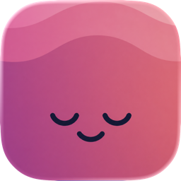

Track brain fog. Find your patterns. Feel clearer.
We're happy to help with any question, bug, or feedback. Email us and we'll get back to you as soon as we can.
No. FoggyBrain requires no account and no sign-up. Your data is stored privately on your device.
All of your entries are kept locally on your device. Apple Health access, if you enable it, is read-only and optional. You can export your data at any time.
You can connect during onboarding, or later in Settings → Health. If you previously denied access, re-enable it in iOS Settings → Privacy & Security → Health → FoggyBrain.
On-device AI summaries require Apple Intelligence to be enabled in your device Settings, on a supported device. The feature hides automatically when it isn't available.
Pro unlocks on-device AI insights, the full advanced charts and Apple Health correlation suite, unlimited custom factors, and data export. It is a one-time purchase.
Go to Settings within the app and tap “Restore Purchases.” Purchases are tied to your Apple ID.